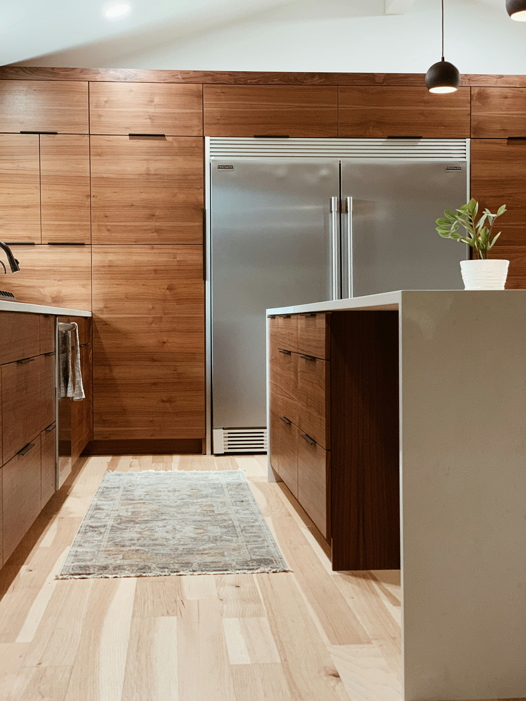
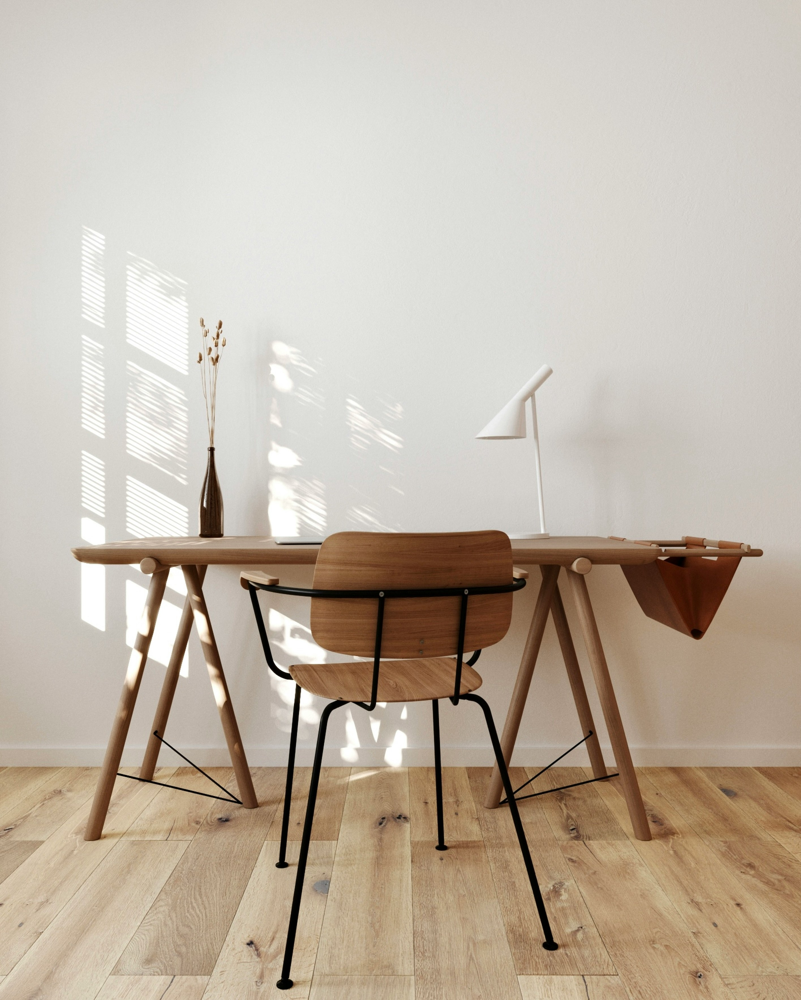

Service
Custom furniture
Change your living space with Net Wood Works to better suit your needs and desires.From stylish dining tables to fashionable storage options, we design pieces that make your house a home

Woodworking-Using premium materials and expert craftsmanship,we provide expert wookworking services.Every step of the process, from cutting and shapping to assembling and finishing,is done with precision,durability,and longetivity in mind. |

Chairs -For homes,workplaces,and outdoor areas,we design and produce fashionable and cosy wooden chairs. Every chair is made with care to offer both durability and visual appeal. |

Marking out -Accurate marking out is crucial,therefore before any cutting or construction starts,we make sure that measurements and layouts are exact. This ensures that each project will fit perfectly and produce excellent outcomes.
|

Drawers - We create custom drawers with smooth functioning and effective storage in mind. Our drawers are designed to be durable and have a clean appearance,all while fitting nicely into your area.
|
 Kitchen cabinets installations - Our speciality is creating and installing morden kitchen cabinets that make the most of available space. Our installations are customised to satisfy your needs and improve your kitchen's overall appearance.
| 
Shelves - We build unique shelves for both storage and presentation. Our shelves are made to be strong, useful, and stylish for both homes and offices
|  Tables - We create excellent wooden tables in a range of design and dimensions. Every piece,from work desk to dinning tables, is constructed to blend strength with a fashionable,contemporary style. |